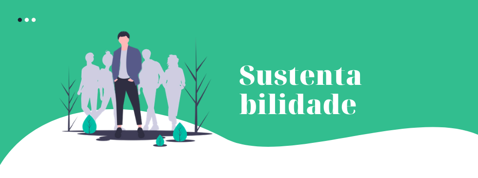

O que fazemos?
No Instituto Proa, um grupo de estudantes visionários uniu-se para combater um dos desafios mais urgentes da humanidade: as mudanças climáticas e a perda da biodiversidade. Através do projeto NatSave, desenvolvemos soluções práticas, intuitivas e gamificadas que engajam o público na adoção de hábitos sustentáveis, em consonância com os Objetivos de Desenvolvimento Sustentável (ODS) 13 e 15 da ONU até o ano de 2030.
Nossa missão? Tornar a prática de hábitos sustentáveis divertida, acessível e recompensadora! Através da gamificação, transformamos a luta pela sustentabilidade em uma jornada empolgante, inspirando as pessoas a se tornarem agentes de mudança em suas comunidades.
Fornecemos ferramentas e conhecimentos que empoderam as pessoas a tomar decisões mais sustentáveis em seu dia a dia. Acreditamos que a colaboração é a chave para o sucesso: através de parcerias com diversas instituições, expandimos nosso alcance e multiplicamos o impacto do NatSave.
Junte-se a nós e faça a diferença! Se você também é apaixonado pela sustentabilidade e deseja contribuir para um futuro melhor, convidamos você a se juntar à nossa comunidade. Através do NatSave, você pode fazer a diferença e ajudar a construir um mundo mais verde, justo e próspero para as próximas gerações.